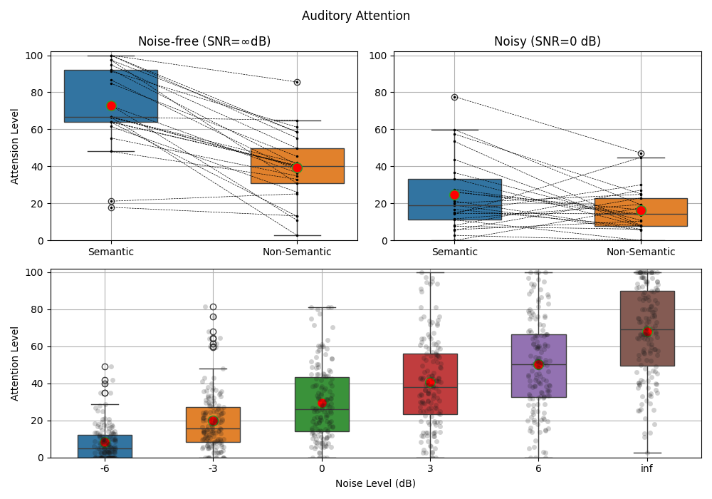

Note
Go to the end to download the full example code or to run this example in your browser via JupyterLite or Binder
Auditory Attention: Plot Group Data¶
#sp.stats.test_2groups
#sp.stats.plot_groups_boxes
#sp.stats.plot_groups_boxes
import numpy as np
import pandas as pd
import matplotlib.pyplot as plt
import spkit as sp
path = 'https://nikeshbajaj.github.io/PhyaatDataset/PhyAAt_AttentionScoreData_v1.csv'
D = pd.read_csv(path)
D1 = D[(D['SNRdB']==1000) & (D['LengthStim']=='L3') & (D['Semanticity']==0)][['SID','AttentionScore']]
D2 = D[(D['SNRdB']==1000) & (D['LengthStim']=='L3') & (D['Semanticity']==1)][['SID','AttentionScore']]
D1 = D1.rename(columns={'AttentionScore':'Att_Sem0_noisefree'})
D2 = D2.rename(columns={'AttentionScore':'Att_Sem1_noisefree'})
D3 = D[(D['SNRdB']==0) & (D['LengthStim']=='L3') & (D['Semanticity']==0)][['SID','AttentionScore']]
D4 = D[(D['SNRdB']==0) & (D['LengthStim']=='L3') & (D['Semanticity']==1)][['SID','AttentionScore']]
D3 = D3.rename(columns={'AttentionScore':'Att_Sem0_noisy'})
D4 = D4.rename(columns={'AttentionScore':'Att_Sem1_noisy'})
D12 = D1.merge(D2)
D34 = D3.merge(D4)
D12_np = D12.to_numpy()[:,1:].astype(float)
D34_np = D34.to_numpy()[:,1:].astype(float)
SNRdB = list(set(D['SNRdB']))
SNRdB.sort()
SEM = list(set(D['Semanticity']))
SEM.sort()
LS = list(set(D['LengthStim']))
LS.sort()
Exp1 = [D[D['Semanticity']==sem]['AttentionScore'].to_numpy() for sem in SEM]
Exp2 = [D[D['LengthStim']==l]['AttentionScore'].to_numpy() for l in LS]
Exp3 = [D[D['SNRdB']==snr]['AttentionScore'].to_numpy() for snr in SNRdB]
SNRdB_label = ['-6', '-3', '0', '3', '6', 'inf']
plt.figure(figsize=(10, 7))
ax1 = plt.subplot(2,2,1)
ax2 = plt.subplot(2,2,2)
ax3 = plt.subplot(2,1,2)
sp.stats.plot_groups_boxes(x=D12_np,lines=True,ax=ax1,xlabels=['Semantic','Non-Semantic'],title=r'Noise-free (SNR=$\infty$dB)',ylab='Attension Level')
sp.stats.plot_groups_boxes(x=D34_np,lines=True,ax=ax2,xlabels=['Semantic','Non-Semantic'],title='Noisy (SNR=0 dB)')
sp.stats.plot_groups_boxes(Exp3,strip_kw=dict(color="0.1",alpha=0.2),ax=ax3,ylab='Attention Level',
xlabels=SNRdB_label)
ax3.set_xlabel('Noise Level (dB)')
ax1.set_ylim([0,102])
ax2.set_ylim([0,102])
ax3.set_ylim([0,102])
plt.suptitle('Auditory Attention')
plt.tight_layout()
plt.show()
Total running time of the script: (0 minutes 0.354 seconds)
Related examples


Decision Trees without converting Catogorical Features
Decision Trees without converting Catogorical Features


EEG Computing Rhythmic Features - PhyAAt - Semanticity
EEG Computing Rhythmic Features - PhyAAt - Semanticity